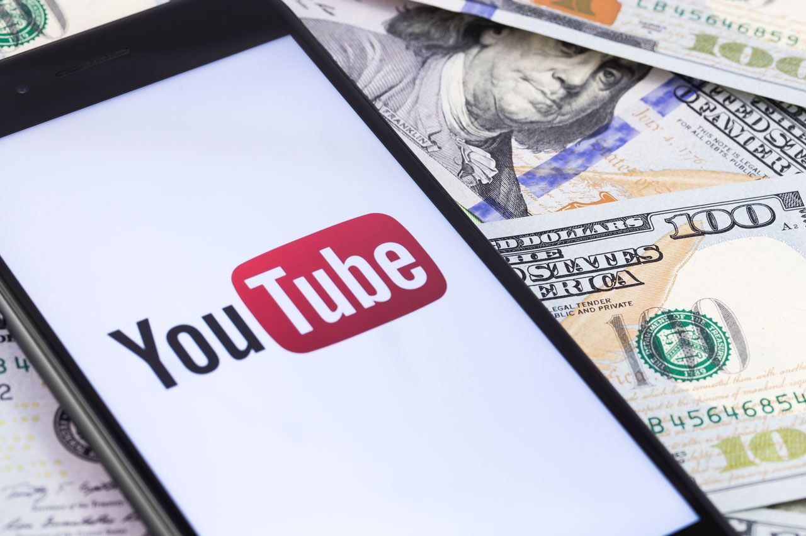
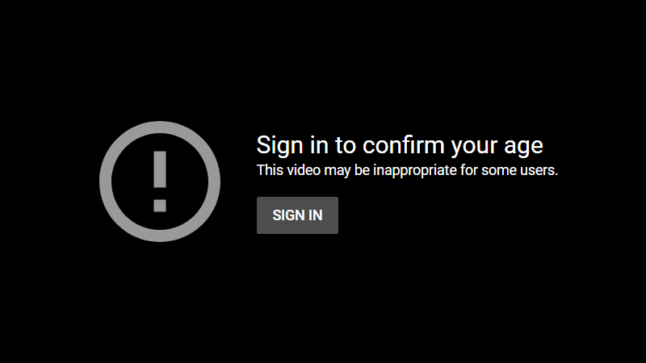
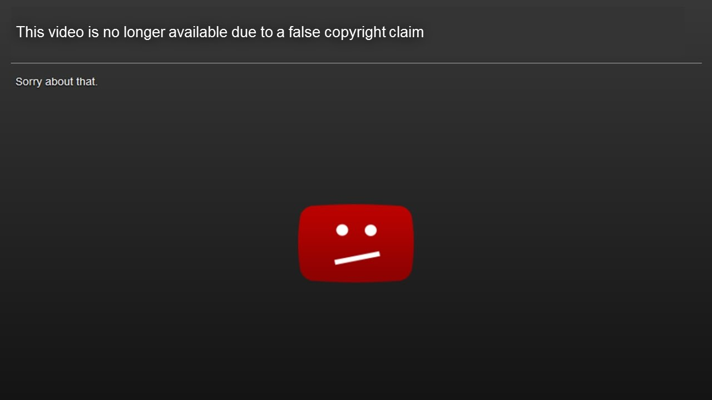
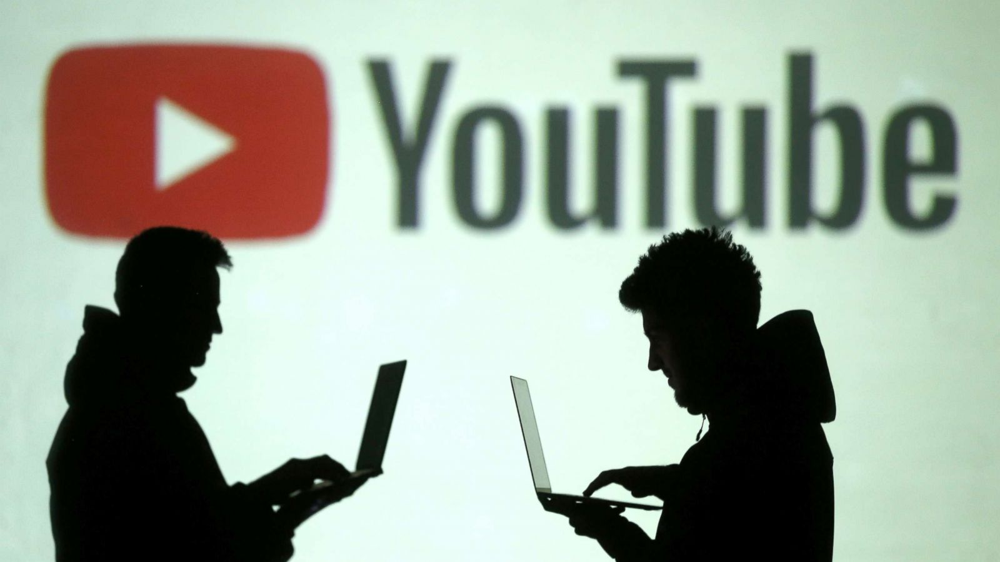
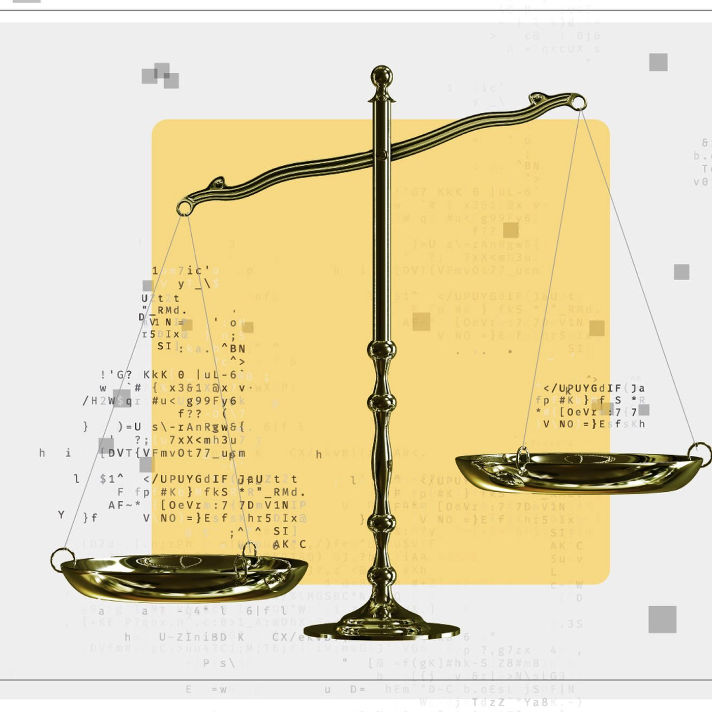

Demonetization and Limited Monetization
Demonetization and limited monetization significantly impact content creators by reducing their revenue streams. YouTube's advertiser-friendly guidelines often target content related to sensitive topics such as news reporting, political discussions, or controversial issues, leading to decreased ad revenue for creators. This form of censorship can hinder creators' ability to sustain their channels and produce quality content due to financial strain. Moreover, limited monetization may restrict the promotion of videos, further decreasing their visibility and engagement among audiences. Content creators often face challenges in navigating these monetization policies and adapting their content to comply with platform guidelines while maintaining their creative freedom.
Age-Restriction and Limited Visibility
Age-restriction and limited visibility measures are implemented by YouTube to regulate access to videos containing explicit language, violence, or mature themes. While age-restricted videos aim to protect younger audiences from potentially harmful content, they may also experience reduced visibility in search results, recommendations, or trending sections. This limitation in visibility can hinder the video's reach and engagement, impacting the creator's ability to connect with their audience effectively. Content creators must strike a balance between addressing mature themes and ensuring their content remains accessible to their intended audience. Furthermore, navigating age-restriction policies requires creators to consider the potential impact on their content's reach and monetization opportunities.
Copyright Claims and Content ID Matches
Copyright claims and Content ID matches pose significant challenges for content creators when incorporating copyrighted material into their videos. These claims can result in demonetization, restricted access, or removal of the video, affecting the creator's ability to monetize and share their content. Content creators must understand copyright laws and fair use principles to avoid infringing on others' intellectual property rights. However, the subjective nature of copyright enforcement on platforms like YouTube can sometimes lead to false claims or disputes over ownership. To mitigate these risks, creators may need to seek permission, use royalty-free assets, or provide transformative commentary or critique when incorporating copyrighted material into their content.
Community Guidelines Violations
Violating YouTube's community guidelines, including hate speech, harassment, misinformation, or graphic content, can result in the removal or age-restriction of videos. These guidelines aim to maintain a safe and respectful platform environment, but their subjective interpretation can sometimes lead to content being unfairly flagged or removed. Content creators must familiarize themselves with YouTube's community guidelines and strive to create content that complies with these standards. However, navigating these guidelines can be challenging due to their evolving nature and the platform's inconsistent enforcement practices. Creators may need to adapt their content strategies and communication styles to ensure compliance while preserving their creative expression and authenticity.
Limited Reach and Suppression
Certain topics or creators may experience limited reach or suppression in search results, recommendations, or trending sections on YouTube. Algorithmic biases or manual intervention by YouTube can result in content being unfairly targeted or marginalized. This suppression can hinder the discoverability and growth of channels, impacting creators' ability to attract and retain an audience. Content creators must remain vigilant against algorithmic biases and advocate for transparent and equitable content distribution practices on the platform. Additionally, diversifying content strategies and engaging with alternative promotion methods can help mitigate the impact of limited reach and suppression on channel growth and visibility.
